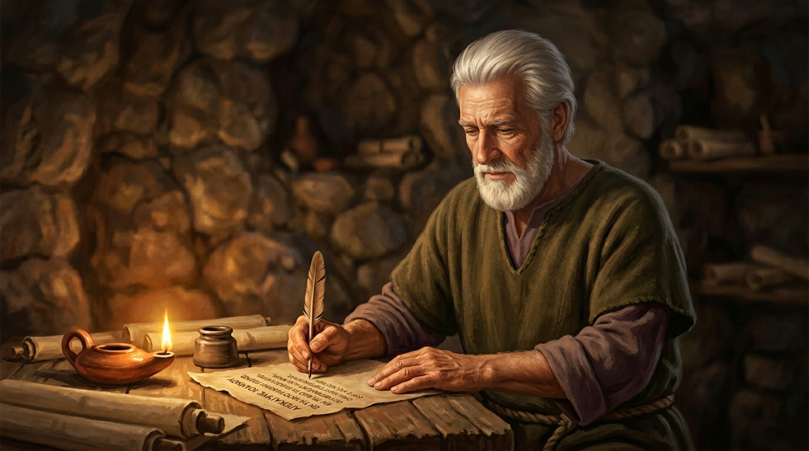
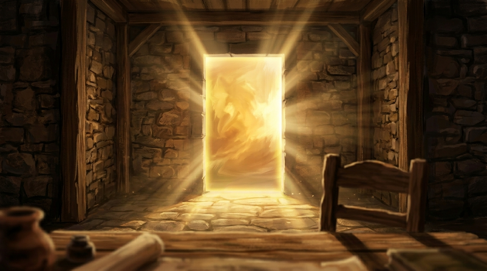
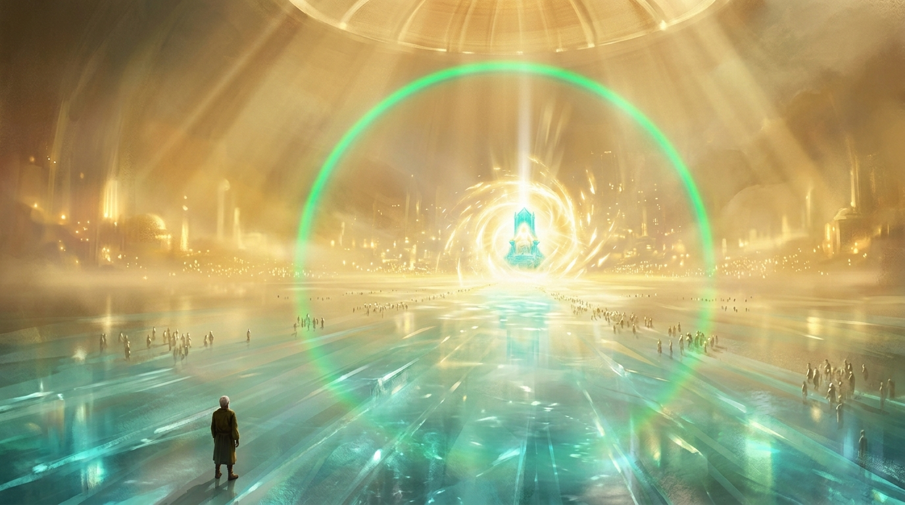

The Narrative
Three Acts. One Threshold.
I
The Exile
Patmos. A stone dwelling at dusk. John — aged, exiled, alone — writes by lamplight. The palette is muted, earthy, terrestrial. Everything is heavy. Everything is before.
II
The Threshold
A door of blazing light materializes in his room. A voice like a trumpet. The world stretches. John is pulled through a dimensional membrane into heaven’s throne room — vast, crystalline, overwhelmingly luminous.
III
The Revelation
The throne. The creatures. The elders falling. Crowns cast across a sea of glass. An architecture of worship laid bare — then the slow dissolve back to a man, sitting at a table, forever changed.

Act I

The Threshold

Act II

Act III